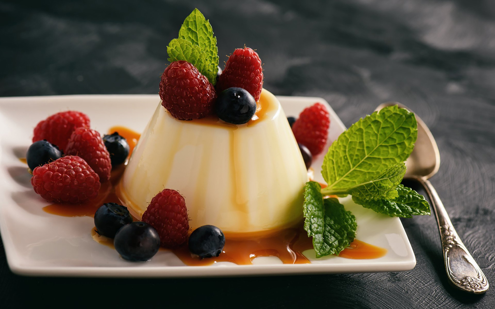

Vanilla and cinnamon panna cotta

Description
This easy panna cotta uses shop-bought youghurt and passionfruit
Ingredients
- 1 cup skim milk
- 2 cinnamon sticks
- 2 cups 99% fat-free diet vanilla yoghurt
- 1/4 cup boiling water
- 1 tbsp gelatine powder
- 2 passionfruit, halved
Steps
-
Combine milk and cinnamon in a small saucepan over low heat. Bring to the boil,
stirring occasionally. Remove from heat. Allow to cool to room temperature. Remove
cinnamon sticks.
-
Combine milk mixture and yoghurt in a large bowl. Pour boiling water into a jug. Sprinkle
over gelatine. Using a fork, whisk until gelatine is dissolved. Stir through yoghurt
mixture until smooth.
-
Divide panna cotta mixture between four 3/4 cup-capacity moulds. Place on a tray.
Cover with plastic wrap. Refrigerate for 6 hours or until firm.
-
Carefully run a round-bladed knife around the edge of each panna cotta. Turn moulds
out onto plates. Drizzle with passionfruit pulp. Serve.